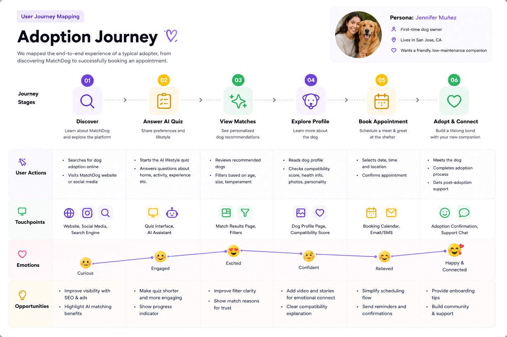
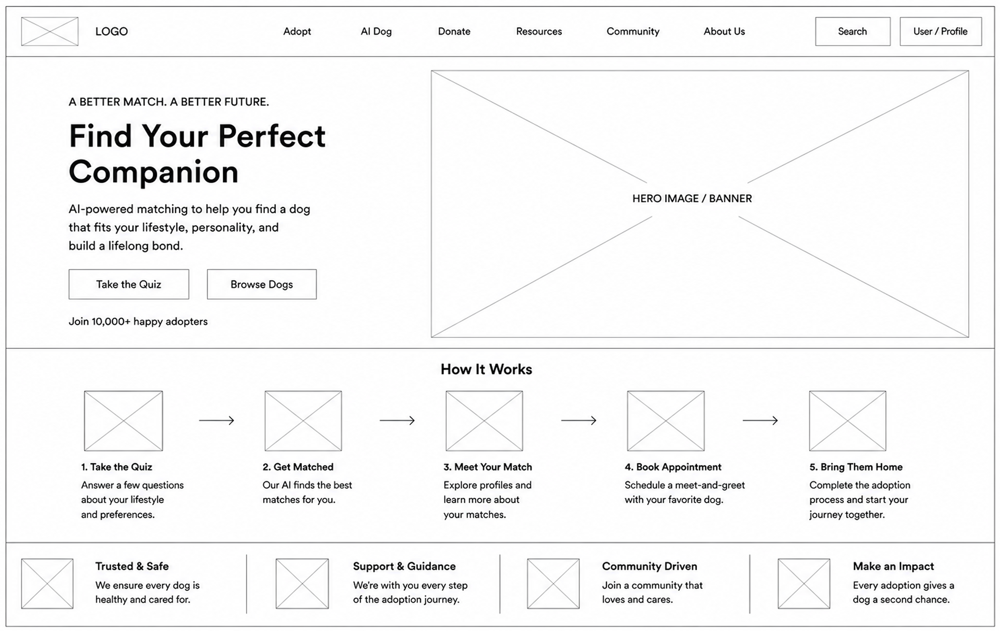
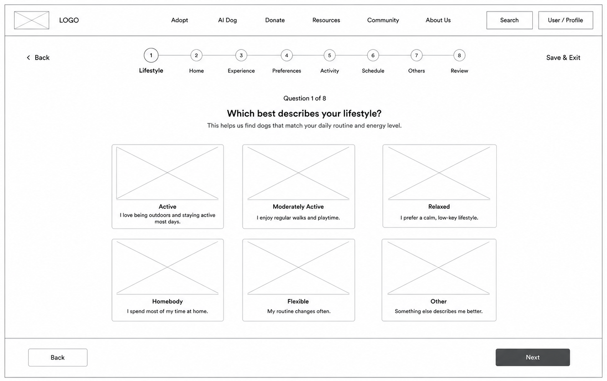
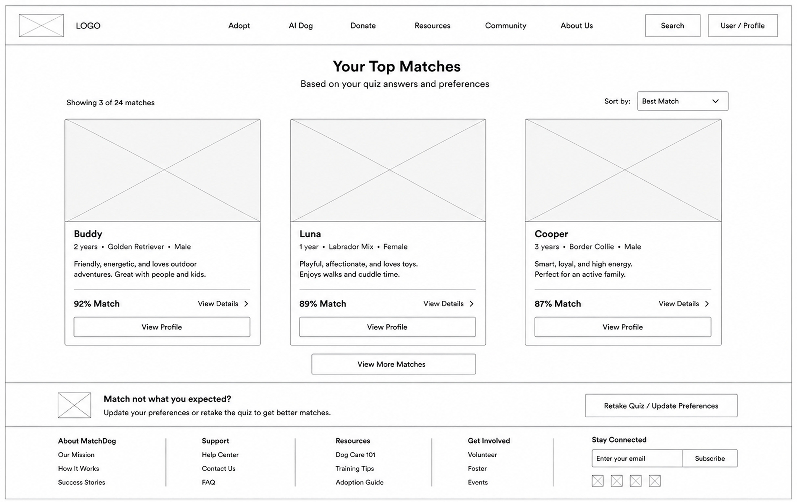
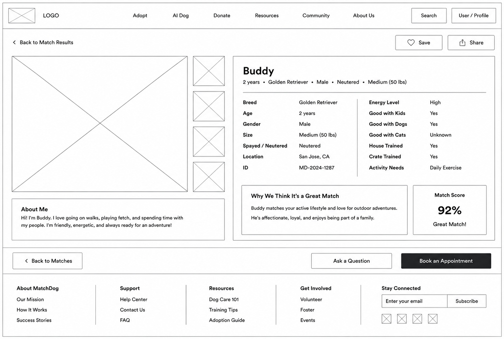
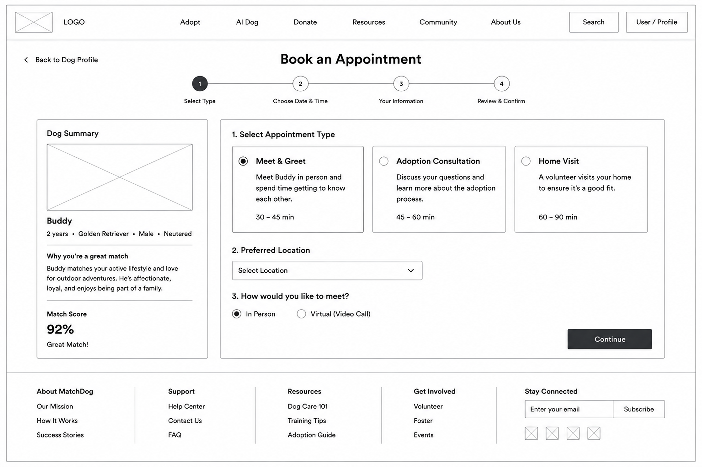
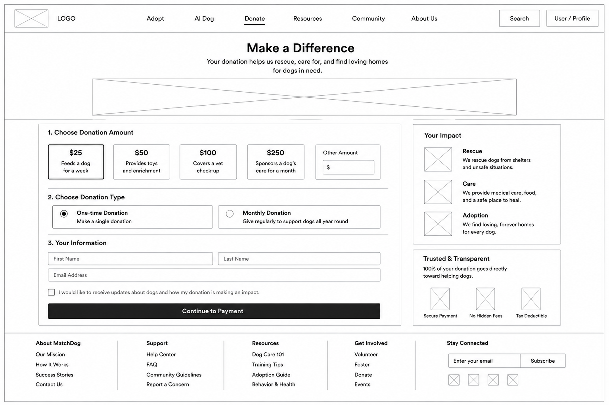
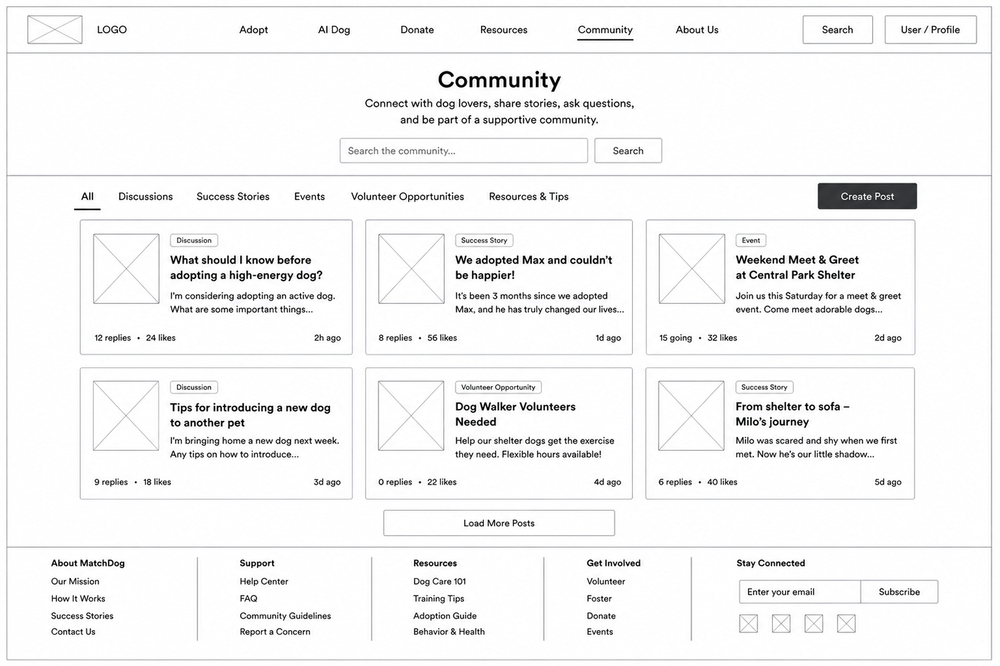
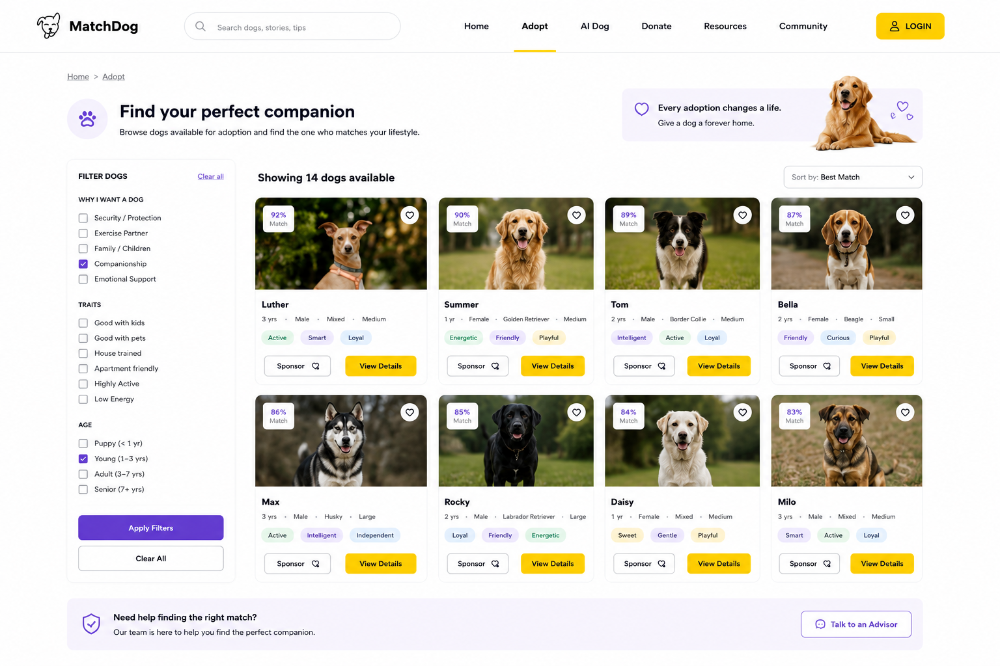
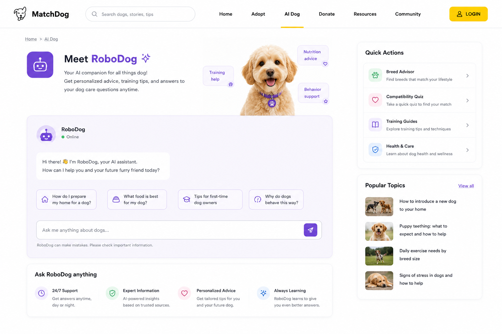

The idea.
Too many adoptions fail because the dog and the person were never a good fit. MatchDog tackles that up front by first learning about your life. It then recommends the dogs you'll actually thrive with, and walks you all the way to a booked meet-and-greet.
My role.
A three-person graduate team built MatchDog across three surfaces. I designed the consumer-facing website end to end.
The team project
MatchDog as a full platform, a consumer website, an adopter mobile app, and an admin tool for shelters. Research and brand were shared; each surface had one owner.
What I owned
The B2C website: the information architecture, the match-quiz and adoption flows, the dog-browsing experience, and the full visual design of the site.
Grounded in real adopters.
We built five personas, from a divorced dad wanting a family companion to a first-time adopter who needs reassurance. We then modelled their tasks and prioritised them. Four jobs shaped the site.
User journey map.
Before designing any screens, I mapped the full adoption journey for our primary persona. I charted each stage's actions, touchpoints, and emotional highs and lows to see where adopters lose confidence. Those low points became the opportunities that shaped the site's flows.

Curious Engaged Excited Confident Relieved Happy &Connected
Designing MatchDog.
With the journey mapped, I worked out what the site had to hold and how it should be structured. I defined the core objects and actions, prioritised features by frequency and impact, and shaped it all into a clear information architecture.


Wireframes.








Find your perfect dog.
The heart of the site is a 5-minute quiz that turns lifestyle answers into ranked, percentage-scored matches. It then hands off cleanly to booking a visit (Quiz → Matches → Appointment).
Browse & adopt.
For people who'd rather look around, a filterable browse view puts every available dog one click from a profile, and from there, a visit.

Meet RoboDog.
Not everyone is ready for a live dog, and every new owner has questions. RoboDog is an always-on AI companion that answers anything about dogs, from breed and compatibility advice to training, health, and everyday care. It keeps adopters supported before they commit and long after they take a dog home.

Design system.
MatchDog is built on Poppins and a warm, friendly palette. One type scale and a small set of colours keep every screen consistent.
Typography.
Colours.
Components.
A shared library of the pieces that repeat across the site, each with a rule for when to use it, so every screen is assembled the same way.
One purple primary per screen for the main action; a secondary beside it; disabled greys out and loses the fill.
Filled chips for lifestyle filters in the quiz; a match-score tag flags how well a dog fits.
The workhorse card for match results and browse: photo, name, key traits, and a fit score.
Light fields with a purple focus ring; toggles fill purple when on. Used for search and quiz filters.
- ✓1. QuizCompleted
- ✓2. Your MatchesCompleted
- 3Book AppointmentSchedule a meet & greet
The card-style stepper across the quiz and booking flows; completed steps show an amber check, the current step is highlighted, joined by dashed connectors.
Keeps the visitor oriented on the website; the current page is bold and unlinked.
Shows how far through the lifestyle quiz the adopter is, so long forms feel finishable.
Radios for single choices (appointment type); checkboxes for multi-select lifestyle traits.
For constrained choices like location or breed; expands to a scrollable list on tap.
Availability picker for booking a meet & greet: a scrollable row of dates with ‹ › nav, then time slots; the chosen date and time fill amber.
Built to scale.
Built from patterns
I pulled the pieces that kept repeating in the flows into tokens and components, so the system grew out of real screens rather than theory.
Shared across surfaces
The same library and tokens fed the consumer website, the adopter app, and the shelter admin tool, keeping three designers aligned without re-deciding the basics.
Faster, consistent
New screens were assembled from existing components, which cut rework and kept the look identical from the match quiz to a booked visit.
What it shows.
MatchDog was my exercise in designing a full consumer product, a real IA, a multi-step flow, and a consistent visual system across a whole site, not a single screen. The matching concept also pushed me to think about outcomes, not just signups: the best adoption is sometimes the one you talk someone out of.